Curalo begleitet Betonagen im Winter: vor dem Betonieren die Frostnächte der nächsten 72 Stunden, danach Messbuch, Reife nach der Reifemethode (Temperatur × Zeit) und eine geschätzte Festigkeit bis zu deinem Ausschalziel. Der Rechenweg ist offen, eigene Prüfkörper verbessern die Kurve.
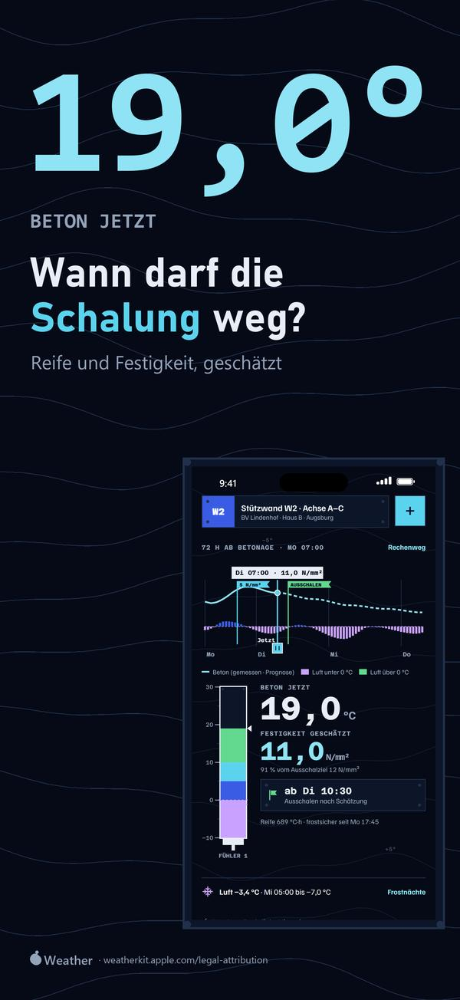
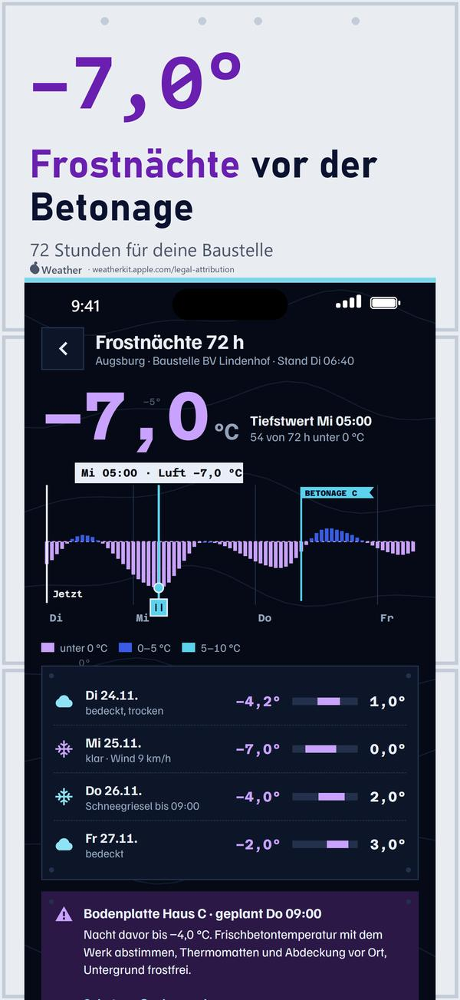
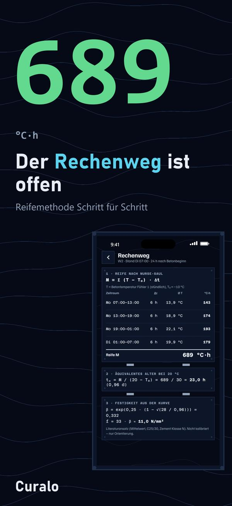
72-Stunden-Zeitachse: Betontemperatur, Luft, Frostgrenze und Ausschalen auf einen Blick
Frostnächte vor jeder Betonage für den Ort deiner Baustelle
Reife (Nurse-Saul) und geschätzte Festigkeit mit offenem Rechenweg
Messbuch mit großen Tasten für zwei Fühler und Lufttemperatur
Checkliste Winterschutz: vor, nach und bis zum Ausschalen
Curalo prowadzi betonowanie zimą: przed betonowaniem noce z mrozem na najbliższe 72 godziny, potem dziennik pomiarów, dojrzałość metodą dojrzałości (temperatura × czas) i szacowaną wytrzymałość aż do Twojego progu rozszalowania. Sposób obliczeń jest jawny, własne próbki poprawiają krzywą.
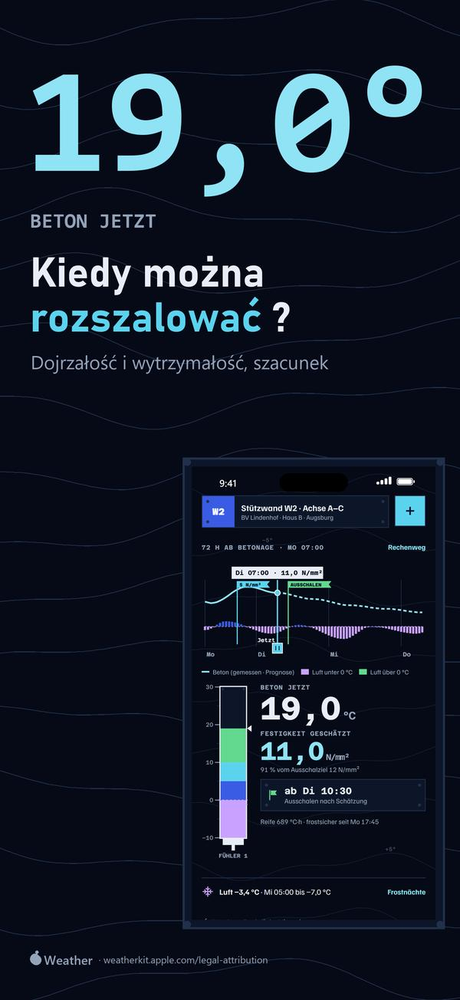
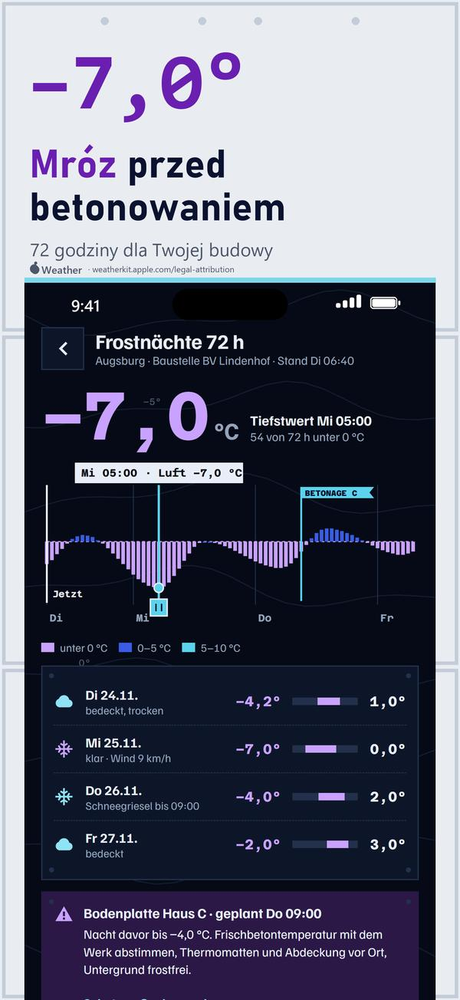
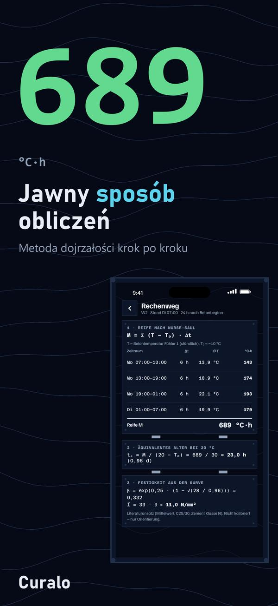
Oś 72 godzin: temperatura betonu, powietrza, próg mrozowy i rozszalowanie
Noce z mrozem przed każdym betonowaniem dla miejsca budowy
Dojrzałość (Nurse-Saul) i szacowana wytrzymałość z jawnym obliczeniem
Dziennik pomiarów z dużymi przyciskami: dwa czujniki i powietrze
Lista ochrony zimowej: przed, po i do rozszalowania
Curalo begeleidt betonstorten in de winter: vóór het storten de vorstnachten van de komende 72 uur, daarna een meetlogboek, rijpheid volgens de rijpheidsmethode (temperatuur × tijd) en een geschatte sterkte tot jouw ontkistingsdoel. De berekening is open, eigen kubussen verbeteren de curve.
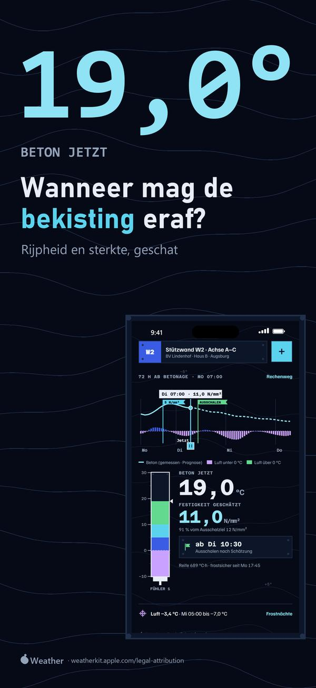
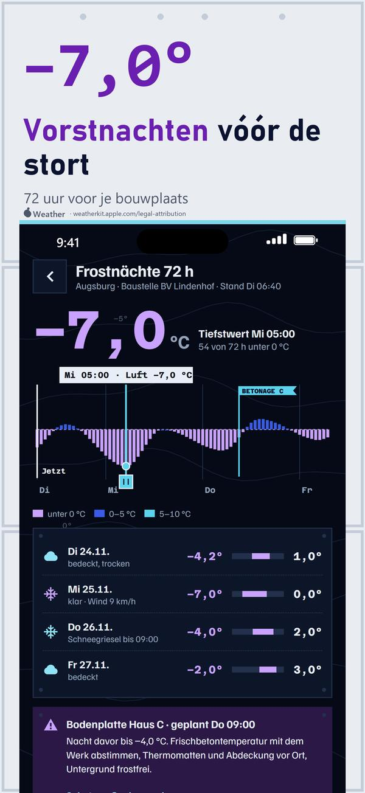
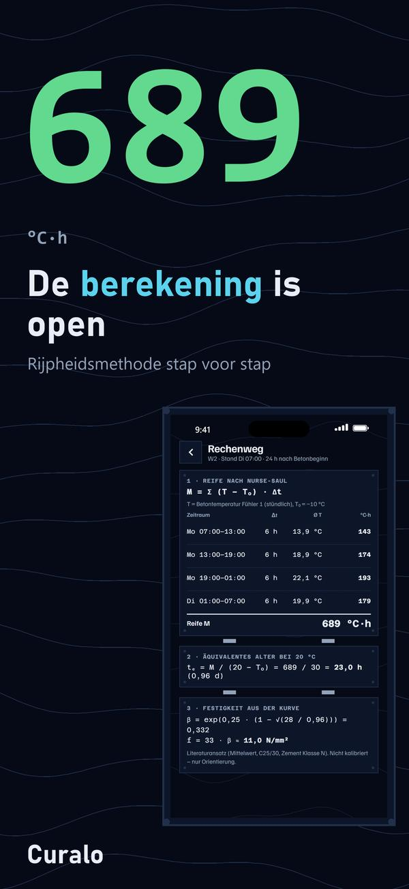
Tijdas van 72 uur: betontemperatuur, lucht, vorstgrens en ontkisten
Vorstnachten vóór elke stort voor de plek van je bouwplaats
Rijpheid (Nurse-Saul) en geschatte sterkte met open berekening
Meetlogboek met grote knoppen voor twee sensoren en lucht
Checklist winterbescherming: vóór, na en tot het ontkisten
Eigen curve uit je kubusresultaten
Nabehandelingsprotocol als pdf voor uitvoerder en toezicht
Curalo följer gjutningar på vintern: före gjutning frostnätterna de kommande 72 timmarna, sedan mätloggbok, mognad enligt mognadsmetoden (temperatur × tid) och en uppskattad hållfasthet fram till ditt mål för formrivning. Beräkningen är öppen, egna provkuber förbättrar kurvan.
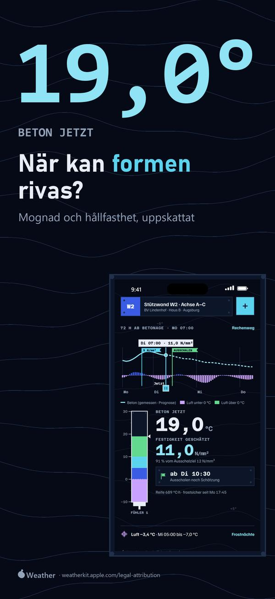
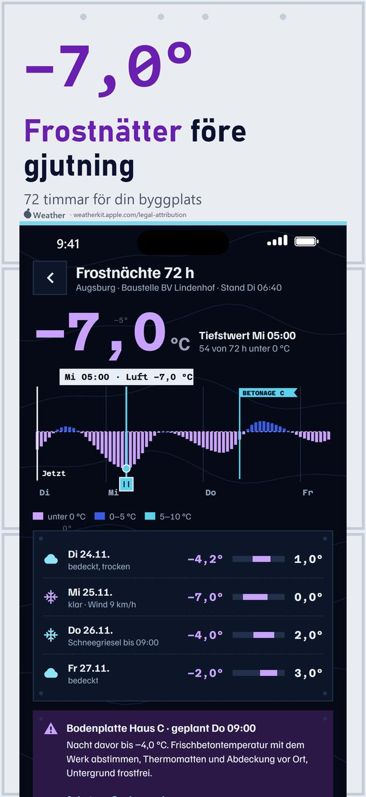
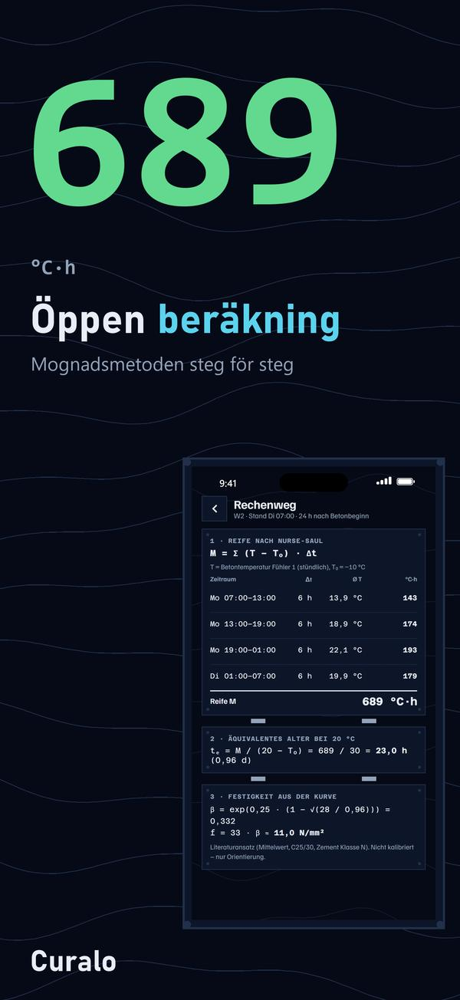
Tidsaxel på 72 timmar: betongtemperatur, luft, frostgräns och formrivning
Frostnätter före varje gjutning för platsen
Mognad (Nurse-Saul) och uppskattad hållfasthet med öppen beräkning
Mätloggbok med stora knappar för två givare och luft
Checklista vinterskydd: före, efter och fram till formrivning
Egen kurva från dina kubresultat
Härdningsprotokoll som pdf för platschef och kontroll
Curalo seuraa talven betonivaluja: ennen valua seuraavan 72 tunnin pakkasyöt, sen jälkeen mittauskirja, kypsyys kypsyysmenetelmällä (lämpötila × aika) ja arvioitu lujuus purkutavoitteeseesi asti. Laskentatapa on avoin, omat koekappaleet tarkentavat käyrää.
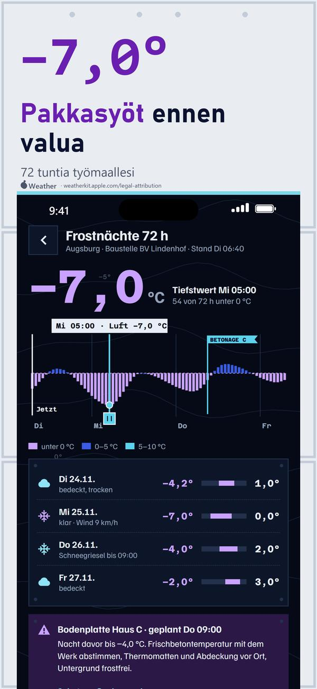
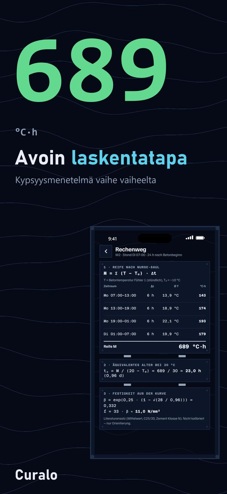
72 tunnin aikajana: betonin ja ilman lämpötila, pakkasraja ja muottien purku
Pakkasyöt ennen jokaista valua työmaan sijainnille
Kypsyys (Nurse-Saul) ja arvioitu lujuus avoimella laskulla
Mittauskirja isoilla painikkeilla: kaksi anturia ja ilma
Talvisuojauksen tarkistuslista: ennen, jälkeen ja purkuun asti